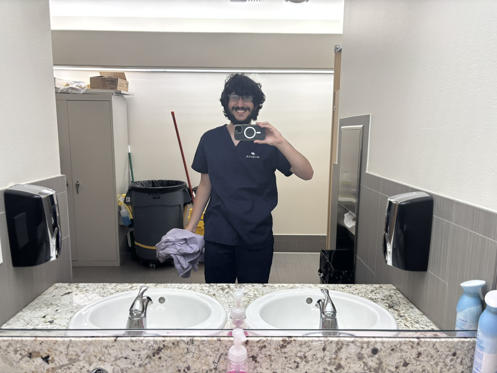
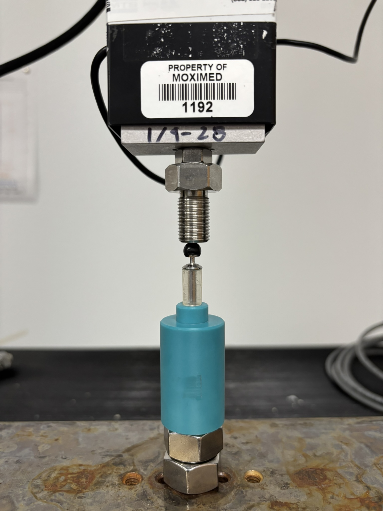

Moximed R&D Internship Summer 2025
During the Summer of 2025 I had the amazing opprotunity to work as an R&D intern with Moximed in Fremont, CA. During my internship I engaged in the R&D process, and seperately completed a research project which evaluated potential areas of growth which was presented to senior members of the company.
Above is an image of some of the testing I performed for Moximed. Using a Instron universal load testing machine I was able to chart forces on a compression device to look for discrepancies in batch quality. Before the end of my internship I designed a new testing setup to improve upon an antiquated design. Other tasks during the internship involved cadaver labs for early stage design validation of new parts.